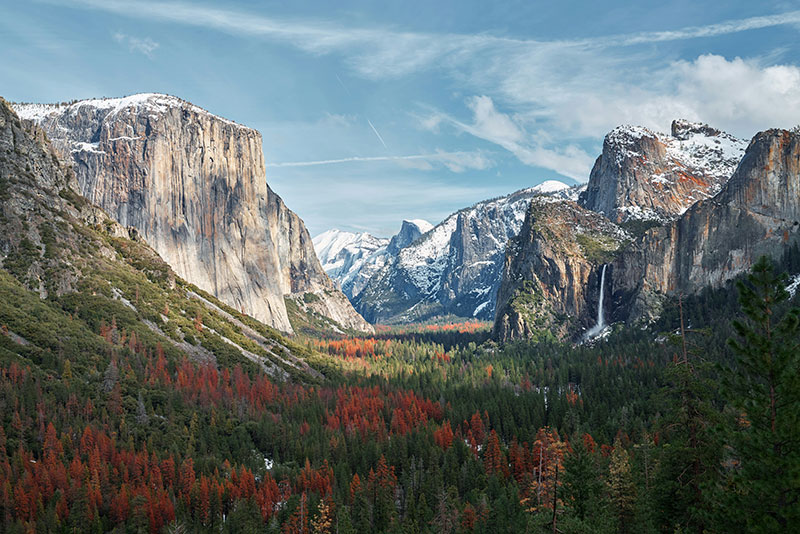

Národní park Yosemite, klenot americké Sierry Nevady, uchvacuje turisty z celého světa svou úchvatnou scenérií, majestátními skalními útvary, bujnou vegetací a ikonickými vodopády. Park o rozloze 3 081 km² nabízí pestrou paletu aktivit pro milovníky přírody, od pěší turistiky a horolezectví až po pozorování divoké zvěře a kempování.
5 nejzajímavějších míst v Yosemitském národním parku:
-
Yosemitský vodopád
Nejvyšší vodopád v Severní Americe, padající z výšky 739 metrů, je ikonou parku a uchvacuje svou mohutností a krásou.
-
El Capitan
Impozantní skalní stěna z žuly, vysoká 914 metrů, je snem horolezců z celého světa. Nabízí lezecké trasy různé obtížnosti a úchvatné panoramatické výhledy.
-
Half Dome
Další ikonická skalní formace, Half Dome, je charakteristická svým specifickým tvarem, připomínajícím rozříznutou kopuli. Výstup na vrchol je náročný, ale odměnou je fantastický výhled na údolí Yosemite.
-
Tuolumne Meadows
Rozsáhlá luční oblast s bohatou flórou a faunou, protkaná klidnými potoky a jezery, je ideální pro pěší turistiku, cyklistiku a pozorování divoké zvěře.
-
Glacier Point
Vyhlídka s panoramatickým výhledem na údolí Yosemite, vodopády a okolní horské štíty. Je to ideální místo pro zachycení dechberoucích fotografií a kochání se krásou parku.
Další informace
Kromě výše uvedených 5 tipů nabízí Yosemite mnoho dalších turisticky atraktivních míst, jako jsou Mariposa Grove s obřími sekvojemi, Mirror Lake s klidnou hladinou odrážející okolní hory, či Yosemite Falls Trail, vedoucí k úpatí Yosemitského vodopádu.
Ať už se chystáte na túru do divočiny, zdolávání skalních stěn, pozorování medvědů a jelenů, nebo jen relaxaci v malebném prostředí, Yosemite vás zaručeně uchvátí a zanechá ve vás nezapomenutelné vzpomínky.
Tip: Pro více informací o parku a plánování vašeho výletu navštivte oficiální webové stránky Národního parku Yosemite: https://www.yosemite.com/